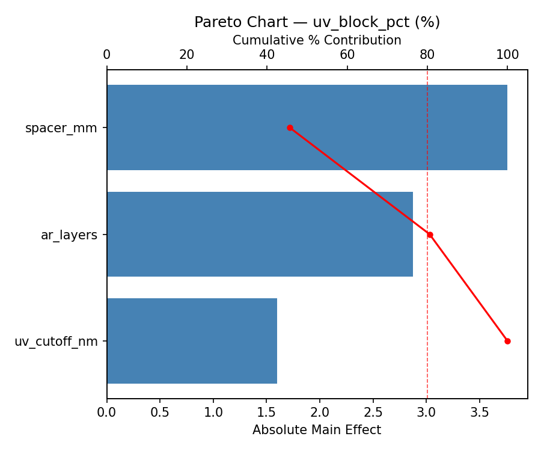
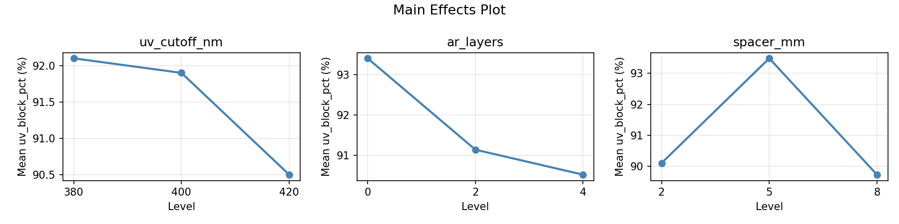
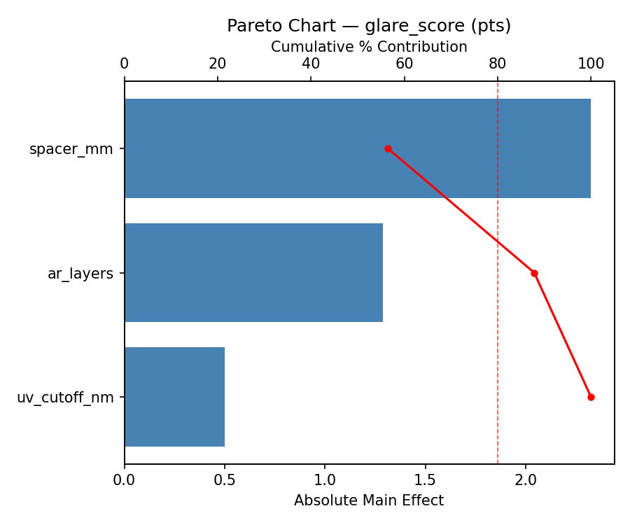
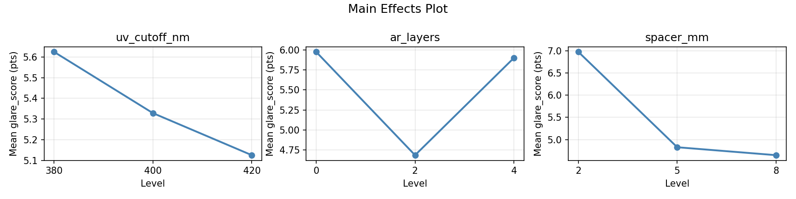
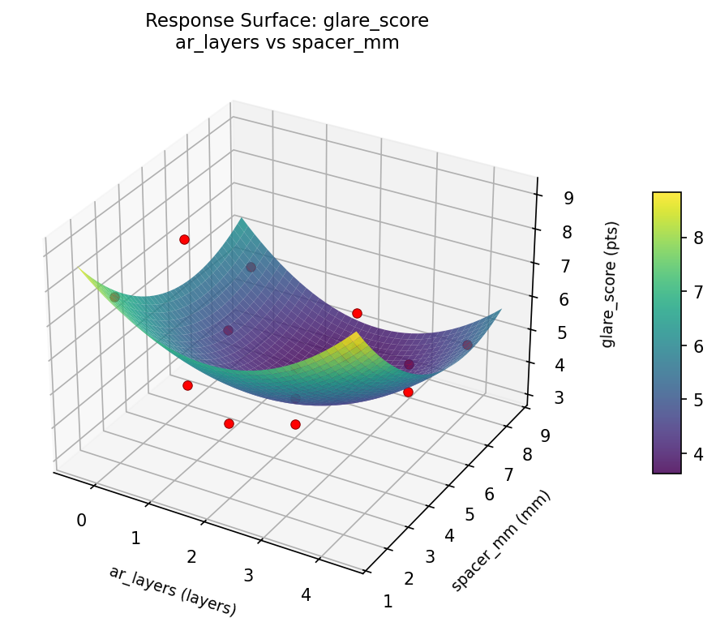
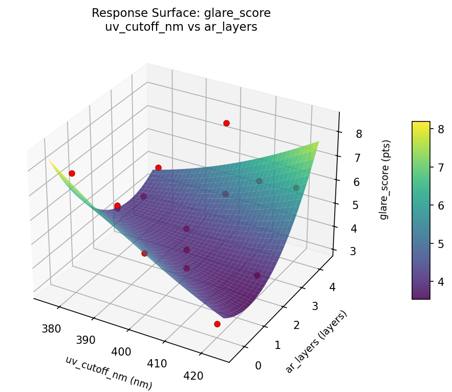
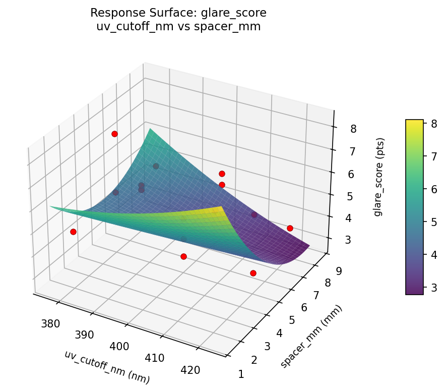
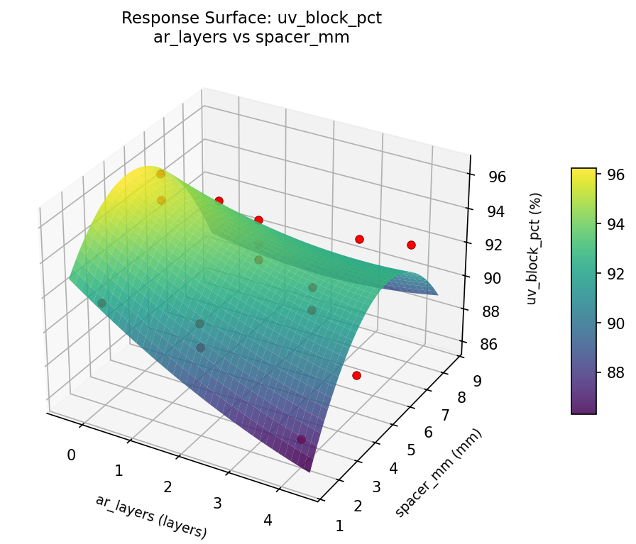
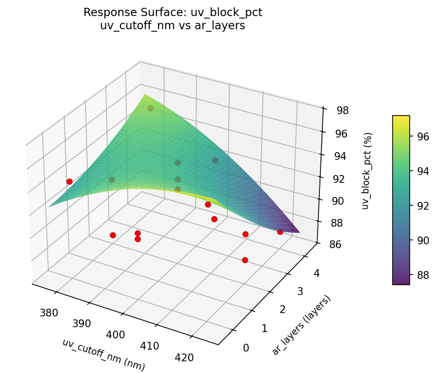
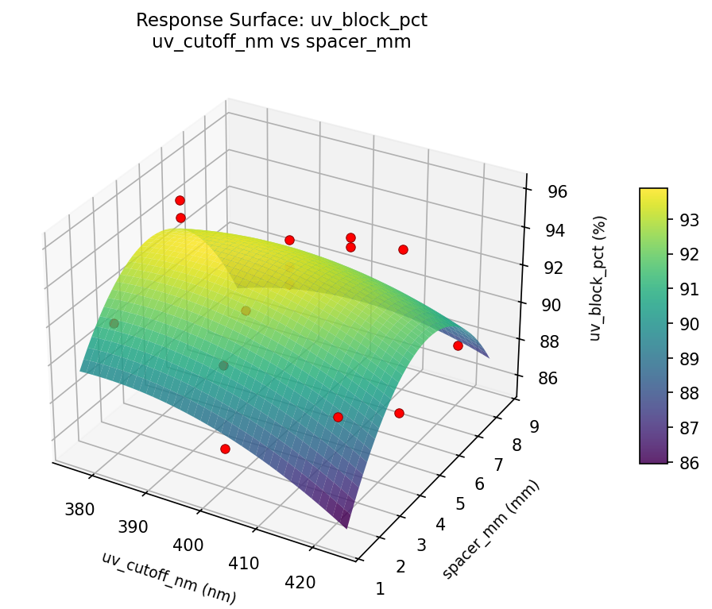

Summary
This experiment investigates art framing uv protection. Box-Behnken design to maximize UV protection and minimize glare by tuning glass type UV cutoff, anti-reflective coating layers, and spacer depth.
The design varies 3 factors: uv cutoff nm (nm), ranging from 380 to 420, ar layers (layers), ranging from 0 to 4, and spacer mm (mm), ranging from 2 to 8. The goal is to optimize 2 responses: uv block pct (%) (maximize) and glare score (pts) (minimize). Fixed conditions held constant across all runs include frame = wood, mat = acid_free.
A Box-Behnken design was chosen because it efficiently fits quadratic models with 3 continuous factors while avoiding extreme corner combinations — requiring only 15 runs instead of the 8 needed for a full factorial at two levels.
Quadratic response surface models were fitted to capture potential curvature and factor interactions. The RSM contour plots below visualize how pairs of factors jointly affect each response.
Key Findings
For uv block pct, the most influential factors were spacer mm (45.7%), ar layers (34.9%), uv cutoff nm (19.4%). The best observed value was 96.0 (at uv cutoff nm = 400, ar layers = 4, spacer mm = 8).
For glare score, the most influential factors were spacer mm (56.5%), ar layers (31.3%), uv cutoff nm (12.2%). The best observed value was 3.1 (at uv cutoff nm = 420, ar layers = 4, spacer mm = 5).
Recommended Next Steps
- Run confirmation experiments at the predicted optimal settings to validate the model.
- Consider whether any fixed factors should be varied in a future study.
Experimental Setup
Factors
| Factor | Low | High | Unit |
|---|
uv_cutoff_nm | 380 | 420 | nm |
ar_layers | 0 | 4 | layers |
spacer_mm | 2 | 8 | mm |
Fixed: frame = wood, mat = acid_free
Responses
| Response | Direction | Unit |
|---|
uv_block_pct | ↑ maximize | % |
glare_score | ↓ minimize | pts |
Configuration
{
"metadata": {
"name": "Art Framing UV Protection",
"description": "Box-Behnken design to maximize UV protection and minimize glare by tuning glass type UV cutoff, anti-reflective coating layers, and spacer depth"
},
"factors": [
{
"name": "uv_cutoff_nm",
"levels": [
"380",
"420"
],
"type": "continuous",
"unit": "nm"
},
{
"name": "ar_layers",
"levels": [
"0",
"4"
],
"type": "continuous",
"unit": "layers"
},
{
"name": "spacer_mm",
"levels": [
"2",
"8"
],
"type": "continuous",
"unit": "mm"
}
],
"fixed_factors": {
"frame": "wood",
"mat": "acid_free"
},
"responses": [
{
"name": "uv_block_pct",
"optimize": "maximize",
"unit": "%"
},
{
"name": "glare_score",
"optimize": "minimize",
"unit": "pts"
}
],
"settings": {
"operation": "box_behnken",
"test_script": "use_cases/285_framing_glass/sim.sh"
}
}
Experimental Matrix
The Box-Behnken Design produces 15 runs. Each row is one experiment with specific factor settings.
| Run | uv_cutoff_nm | ar_layers | spacer_mm |
|---|
| 1 | 400 | 0 | 2 |
| 2 | 400 | 2 | 5 |
| 3 | 420 | 2 | 8 |
| 4 | 420 | 2 | 2 |
| 5 | 400 | 2 | 5 |
| 6 | 400 | 2 | 5 |
| 7 | 380 | 2 | 8 |
| 8 | 420 | 0 | 5 |
| 9 | 400 | 0 | 8 |
| 10 | 420 | 4 | 5 |
| 11 | 380 | 2 | 2 |
| 12 | 400 | 4 | 8 |
| 13 | 380 | 0 | 5 |
| 14 | 380 | 4 | 5 |
| 15 | 400 | 4 | 2 |
Step-by-Step Workflow
1
Preview the design
$ python doe.py info --config use_cases/285_framing_glass/config.json
2
Generate the runner script
$ python doe.py generate --config use_cases/285_framing_glass/config.json \
--output use_cases/285_framing_glass/results/run.sh --seed 42
3
Execute the experiments
$ bash use_cases/285_framing_glass/results/run.sh
4
Analyze results
$ python doe.py analyze --config use_cases/285_framing_glass/config.json
5
Get optimization recommendations
$ python doe.py optimize --config use_cases/285_framing_glass/config.json
6
Generate the HTML report
$ python doe.py report --config use_cases/285_framing_glass/config.json \
--output use_cases/285_framing_glass/results/report.html
Real-World Experiment Workflow
ℹ
Physical Art & Craft Process? Use the Manual Workflow
Art experiments involve real materials, chemical reactions (glazes, patinas), and physical processes that require hands-on work. The simulation script above is for demonstration. For your real experiments, use record, status, and export-worksheet.
$ python doe.py export-worksheet --config use_cases/285_framing_glass/config.json \
--format csv --output worksheet.csv
$ python doe.py status --config use_cases/285_framing_glass/config.json
$ python doe.py record --config use_cases/285_framing_glass/config.json --run 1
$ python doe.py analyze --config use_cases/285_framing_glass/config.json --partial
$ python doe.py analyze --config use_cases/285_framing_glass/config.json
$ python doe.py optimize --config use_cases/285_framing_glass/config.json
$ python doe.py report --config use_cases/285_framing_glass/config.json \
--output report.html
✔
Works Without a Test Script
The analysis pipeline doesn't care how results were produced. Record your measurements with record, and the full analysis, optimization, and reporting pipeline works identically. Use --partial to get early insights before all runs are complete.
Features Exercised
| Feature | Value |
|---|
| Design type | box_behnken |
| Factor types | continuous (all 3) |
| Arg style | double-dash |
| Responses | 2 (uv_block_pct ↑, glare_score ↓) |
| Total runs | 15 |
Analysis Results
Generated from actual experiment runs using the DOE Helper Tool.
Response: uv_block_pct
Top factors: spacer_mm (45.7%), ar_layers (34.9%), uv_cutoff_nm (19.4%).
Pareto Chart

Main Effects Plot

Response: glare_score
Top factors: spacer_mm (56.5%), ar_layers (31.3%), uv_cutoff_nm (12.2%).
Pareto Chart

Main Effects Plot

Response Surface Plots
3D surfaces fitted with quadratic RSM. Red dots are observed data points.
glare score ar layers vs spacer mm

glare score uv cutoff nm vs ar layers

glare score uv cutoff nm vs spacer mm

uv block pct ar layers vs spacer mm

uv block pct uv cutoff nm vs ar layers

uv block pct uv cutoff nm vs spacer mm

Full Analysis Output
RSM surface: rsm_uv_block_pct_uv_cutoff_nm_vs_ar_layers.png
RSM surface: rsm_uv_block_pct_uv_cutoff_nm_vs_spacer_mm.png
RSM surface: rsm_uv_block_pct_ar_layers_vs_spacer_mm.png
RSM surface: rsm_glare_score_uv_cutoff_nm_vs_ar_layers.png
RSM surface: rsm_glare_score_uv_cutoff_nm_vs_spacer_mm.png
RSM surface: rsm_glare_score_ar_layers_vs_spacer_mm.png
=== Main Effects: uv_block_pct ===
Factor Effect Std Error % Contribution
--------------------------------------------------------------
spacer_mm 3.7607 0.8017 45.7%
ar_layers 2.8750 0.8017 34.9%
uv_cutoff_nm 1.6000 0.8017 19.4%
=== Summary Statistics: uv_block_pct ===
uv_cutoff_nm:
Level N Mean Std Min Max
------------------------------------------------------------
380 4 92.1000 3.9115 86.7000 95.4000
400 7 91.9000 2.5027 86.9000 94.9000
420 4 90.5000 3.8738 87.5000 96.0000
ar_layers:
Level N Mean Std Min Max
------------------------------------------------------------
0 4 93.4000 2.2316 91.3000 96.0000
2 7 91.1429 2.9376 86.7000 94.9000
4 4 90.5250 4.0500 86.9000 95.4000
spacer_mm:
Level N Mean Std Min Max
------------------------------------------------------------
2 4 90.1000 2.2106 86.9000 91.8000
5 7 93.4857 2.8760 87.5000 96.0000
8 4 89.7250 2.7524 86.7000 92.3000
=== Main Effects: glare_score ===
Factor Effect Std Error % Contribution
--------------------------------------------------------------
spacer_mm 2.3250 0.4210 56.5%
ar_layers 1.2893 0.4210 31.3%
uv_cutoff_nm 0.5000 0.4210 12.2%
=== Summary Statistics: glare_score ===
uv_cutoff_nm:
Level N Mean Std Min Max
------------------------------------------------------------
380 4 5.6250 1.3889 4.8000 7.7000
400 7 5.3286 1.7717 3.1000 7.8000
420 4 5.1250 2.0073 3.3000 7.6000
ar_layers:
Level N Mean Std Min Max
------------------------------------------------------------
0 4 5.9750 2.0998 3.3000 7.7000
2 7 4.6857 1.4531 3.1000 7.6000
4 4 5.9000 1.3491 4.8000 7.8000
spacer_mm:
Level N Mean Std Min Max
------------------------------------------------------------
2 4 6.9750 1.3865 4.9000 7.8000
5 7 4.8286 1.6153 3.1000 7.7000
8 4 4.6500 0.6758 3.7000 5.3000
Pareto chart (uv_block_pct): use_cases/285_framing_glass/results/analysis/pareto_uv_block_pct.png
Pareto chart (glare_score): use_cases/285_framing_glass/results/analysis/pareto_glare_score.png
Main effects (uv_block_pct): use_cases/285_framing_glass/results/analysis/main_effects_uv_block_pct.png
Main effects (glare_score): use_cases/285_framing_glass/results/analysis/main_effects_glare_score.png
Optimization Recommendations
=== Optimization: uv_block_pct ===
Direction: maximize
Best observed run: #10
uv_cutoff_nm = 400
ar_layers = 4
spacer_mm = 8
Value: 96.0
RSM Model (linear, R² = 0.2086, Adj R² = -0.0073):
Coefficients:
intercept +91.5800
uv_cutoff_nm +1.8125
ar_layers +0.0875
spacer_mm -0.4750
RSM Model (quadratic, R² = 0.5792, Adj R² = -0.1783):
Coefficients:
intercept +93.4000
uv_cutoff_nm +1.8125
ar_layers +0.0875
spacer_mm -0.4750
uv_cutoff_nm*ar_layers +0.3750
uv_cutoff_nm*spacer_mm -0.7500
ar_layers*spacer_mm +0.8500
uv_cutoff_nm^2 -3.3125
ar_layers^2 -0.7125
spacer_mm^2 +0.6125
Curvature analysis:
uv_cutoff_nm coef=-3.3125 concave (has a maximum)
ar_layers coef=-0.7125 concave (has a maximum)
spacer_mm coef=+0.6125 convex (has a minimum)
Notable interactions:
ar_layers*spacer_mm coef=+0.8500 (synergistic)
uv_cutoff_nm*spacer_mm coef=-0.7500 (antagonistic)
uv_cutoff_nm*ar_layers coef=+0.3750 (synergistic)
Predicted optimum (from linear model):
uv_cutoff_nm = 420
ar_layers = 2
spacer_mm = 2
Predicted value: 93.8675
Model quality: Weak fit — consider adding center points or using a different design.
Factor importance:
1. uv_cutoff_nm (effect: 5.1, contribution: 72.1%)
2. spacer_mm (effect: 1.4, contribution: 19.4%)
3. ar_layers (effect: 0.6, contribution: 8.6%)
=== Optimization: glare_score ===
Direction: minimize
Best observed run: #15
uv_cutoff_nm = 420
ar_layers = 4
spacer_mm = 5
Value: 3.1
RSM Model (linear, R² = 0.3565, Adj R² = 0.1810):
Coefficients:
intercept +5.3533
uv_cutoff_nm -0.5375
ar_layers -1.1375
spacer_mm -0.2750
RSM Model (quadratic, R² = 0.8647, Adj R² = 0.6213):
Coefficients:
intercept +4.5333
uv_cutoff_nm -0.5375
ar_layers -1.1375
spacer_mm -0.2750
uv_cutoff_nm*ar_layers -0.3750
uv_cutoff_nm*spacer_mm -0.5000
ar_layers*spacer_mm -1.8000
uv_cutoff_nm^2 +0.2208
ar_layers^2 +1.0708
spacer_mm^2 +0.2458
Curvature analysis:
ar_layers coef=+1.0708 convex (has a minimum)
spacer_mm coef=+0.2458 convex (has a minimum)
uv_cutoff_nm coef=+0.2208 convex (has a minimum)
Notable interactions:
ar_layers*spacer_mm coef=-1.8000 (antagonistic)
uv_cutoff_nm*spacer_mm coef=-0.5000 (antagonistic)
uv_cutoff_nm*ar_layers coef=-0.3750 (antagonistic)
Predicted optimum (from quadratic model):
uv_cutoff_nm = 400
ar_layers = 0
spacer_mm = 8
Predicted value: 8.5125
Model quality: Good fit — general trends are captured, some noise remains.
Factor importance:
1. ar_layers (effect: 2.3, contribution: 58.3%)
2. uv_cutoff_nm (effect: 1.1, contribution: 27.6%)
3. spacer_mm (effect: 0.5, contribution: 14.1%)